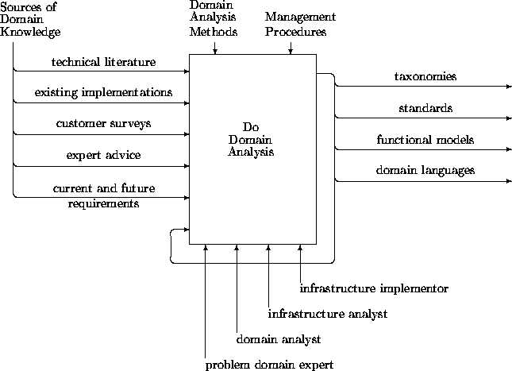
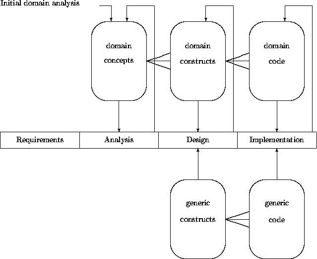

|
Chapter 13: Domain Analysis |
Previous chapters have concentrated on analysis methods resulting in the clarification of the requirements of a particular target system. However, often, a system may be seen as an element of a stream of products. If so, we can investigate their common features. Such a domain characterization can then be leveraged for each system to be developed.
Target-specific OO analysis techniques often generate models with applicability stretching beyond the needs of the system(s) under consideration, and thus intrinsically incorporate at least some form and extent of domain analysis. However, the notion of domain analysis as a distinguishable enterprise remains an immature topic, in need of considerable development. In this chapter, we survey general views, models, and variants of domain analysis, along with their consequences for reuse.
There are several ways to define ``domain''. For example, Berard [2] gives two characterizations:
A founder, if not the founder, of domain analysis is Neighbors [5,6]. He wrote in 1980:
The key to reusable software is captured in domain analysis in that it stresses the reusability of analysis and design, not code.
The scope of a domain investigation can vary widely. A definition of domain analysis formulated by Prieto-Diaz [8] elucidates its purpose as:
... a process by which information used in developing software systems is identified, captured, and organized with the purpose of making it reusable when creating new systems.
Arango and Prieto-Diaz [1] present a model of domain analysis summarized in the following SADT diagram:

This model describes domain analysis as an activity that takes multiple sources of input, produces many different kinds of output, and is heavily parameterized. For example, one parameter is the development paradigm (e.g., SA, Jackson, OO). Raw domain knowledge from any relevant source is taken as input. Participants in the process can be, among others, domain experts and analysts. Outputs are (semi)formalized concepts, domain processes, standards, logical architectures, etc. Subsequent activities produce generic design fragments, frameworks, etc.
While this account gives an inspiring initial insight into domain analysis, it is not the full story. Several refinements are presented next.
When a product is seen as part of a new or an existing stream of products, the domain of this product stream may itself be studied. This study will in general go beyond technical aspects of the product. For example, strategic alignment, longer term marketing aspects, product positioning, risk analysis, common look-and-feel, covering a diversity of product features, etc., will play a role in conjunction with investigations of generic terminology, logical architectures, reliability standards, and other general considerations.
Such a study may be seen as a domain analysis. It involves a multidisciplinary team. Consequently a nonformal language is the lingua franca. A software development paradigm, such as OO, is unlikely to play a prominent role here.
When there is enough confidence that a stream of products can be produced, one may want to factor out the commonalities in the multiple analyses that must be done for each product. Thus one may want to do a conceptual domain analysis that yields common ground for each specific analysis. OO analysis notions lend themselves for capturing generic concepts at multiple levels of granularity. Ensembles, subensembles, classes, and generic relationships are all candidates for describing an application domain.
While we can use the notions and notations from an OO analysis method for requirements domain analysis, we have to adjust the process dimension. We cannot rely on a system-specific requirements document as input to the process. Instead, we have to take in any relevant features from the documentation that describe the commonality of the products. Experts and customers may be tapped, as suggested in the generic diagram. However, the situation differs from the diagram in that people have to be primed for more specific and detailed information. The output side differs as well because the process stops earlier; no model is to be constructed. Instead, generic classes, relationships, ensembles, etc., are produced. These may be organized into one or more OO frameworks that may be specialized to the needs of particular systems.
For example, many of the ATM examples in previous chapters are not geared to any specific system. To the extent to which these descriptions are realistic, they are contributions to an OO domain analysis of ``ATMs for banks''. Our model of the OOA process in Chapter 12 represents an even better example of this form of domain analysis. This model abstracted across different development styles and contexts. It did not culminate in a particular target model, but only those model components forming a basis for any OOA process.
A requirements domain analysis may lead to an OO domain engineering effort. This entails the construction of design fragments of the generic elements identified by a requirements domain analysis. These designs can be implemented and added to a domain-specific code library.
When a stable domain serves as the basis of a product line or market segment, one may consider constructing a generator for a particular domain. This generator may then be used to automatically build (parts of) any of a series of related products. Relational database systems are an example of a mature, stable domain where it is quite conceivable to perform a generator type domain analysis. The query language, platform, operating system and windowing environment would be main parameters for such a relational database builder.
The analysis performed for the construction of such a meta-program may be seen as a third version of the notion of domain analysis. One may assume for such an enterprise not only that the domain is stable and well understood, but also that domain specific design and/or code libraries are available.
One may even step one level higher. For example, the Rose system (Reuse Of Software Elements) [3,4] was an experimental meta-meta-program that assisted in capturing domain knowledge and design know-how for the domain.
Domain analysis is not a one-shot affair. Product definitions evolve continuously. The development of a particular system that exploits previously accumulated domain knowledge can be the source for new insights about the domain that adds to or refines codified domain knowledge. In analogy to the emergence of domain-specific code libraries, we foresee the development of domain-specific analysis concept repositories, linked ultimately to code via domain-specific design repositories. The following diagram describes the interactions:

Functional model components are the primary outputs of a domain analysis. The feedback loops describe/prescribe that the outputs of the different phases are to be abstracted and added to the domain repositories. The ``bird-feet'' lines in the diagram that are attached to the repositories express their interconnections. For example, a domain analysis concept can have multiple realizations in the design repository. Similarly, a domain construct can have multiple realizations in the corresponding code repository, where each realization satisfies different auxiliary requirement trade-offs.
Domain analysis is the spearhead for disciplined reuse in software development. This is quite obvious for the generator version of domain analysis, but applies as well to the two weaker versions. An organization for system development will be complemented, when cost effective, by an organization that maintains and manages domain-specific repositories. OO analysis has much to offer to domain analysis from a technical perspective. However the sociological, cultural and organizational problems of realizing a cost effective reuse program that underlies our diagram extend beyond the technical dimension (see, among others [7]). As discussed in Chapter 15, these obstacles are more easily conquered at the OO design and implementation levels. This has led to the widespread adoption of reuse-based strategies in OO design and programming efforts. However, these practices remain incomplete without equally prevalent adoption of a reuse-based engineering discipline at the requirements and analysis levels.
While OO analysis is focused on the features and functionality of a single system to be generated, a domain analysis focuses on the common and variant features across a family of systems. At least three versions of domain analysis may be distinguished: (1) at the level of product definitions, (2) at the level of analysis of the proto-products, and (3) at the level of the analysis for a generator of applications in the domain. Because of the informality of version (1), the OO paradigm plays a less significant role there than in versions (2) and (3).
To ensure the reusability of the domain models produced, domain analysts use diverse sources of domain knowledge. These sources provide information on the range of potential systems in the domain. While all domain analysis methods involve extraction of terminology and identification of a common domain language, the OO domain analysis method accomplishes this task through identification of classes, relationships and behaviors. Such domain models may translate into reusable frameworks.
In a reuse strategy the domain analysis work-products must be maintained and enhanced over many systems. The domain analysis repository contains domain models that form the basis of subsequent systems analysis activities.
The state of the art in domain analysis is concisely formulated in a Domain Analysis Working Group Report from a workshop held in 1991 [8]. Many open questions are formulated in this document. The great diversity of perspectives suggests that domain analysis is still in an embryonic stage with substantial potential for further developments.